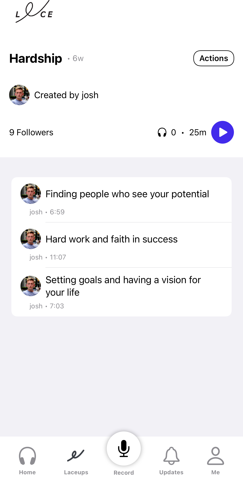
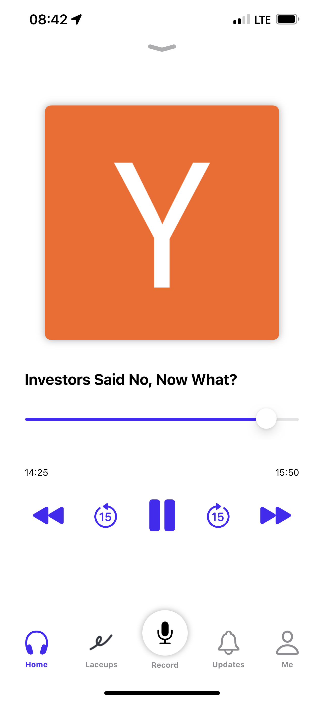

Consumer / Social · Angel-backed
LACE
An audio-based social app built, launched, and angel-funded — with press from CNN and NYT-tier outlets. A crash course in distribution vs. product.
An audio-based social app built, launched, and angel-funded — with press from CNN and NYT-tier outlets. A crash course in distribution vs. product.
LACE was an audio-based social product I built and launched with my co-founder Sam. It attracted angel investment and caught the attention of high-profile reporters at CNN and NYT-level publications.
The project was a real education in the difference between "cool" and "needed." We had distribution — people were interested, press was writing about us. What we were still working through was the gap between initial interest and the kind of habitual retention that makes a consumer social product stick.
"The press came. The users came. Keeping them was the real product problem."
I walked away understanding that consumer social is a game of loops — not launch moments. The product that wins isn't the one with the best first impression; it's the one that earns a daily habit. That distinction shapes how I think about every product decision now.



Distribution is necessary but not sufficient. Retention is the product. A launch that generates press and early users proves demand — it doesn't prove a business.